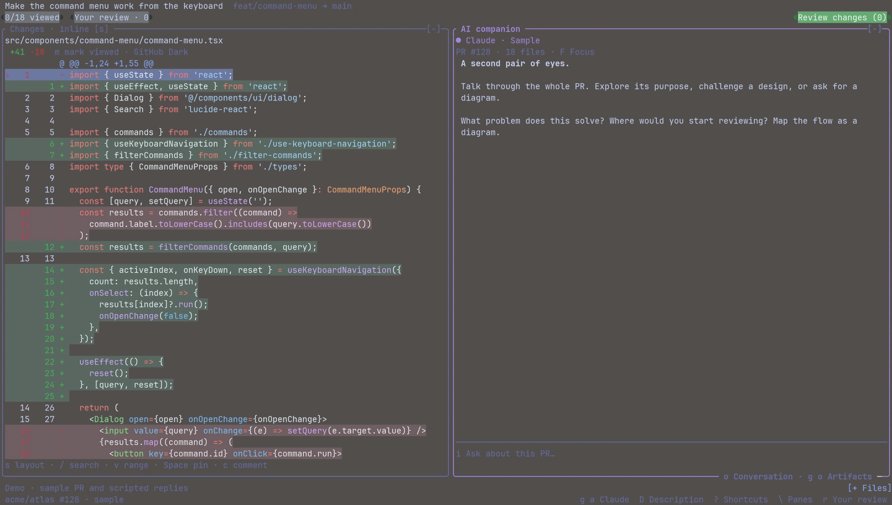
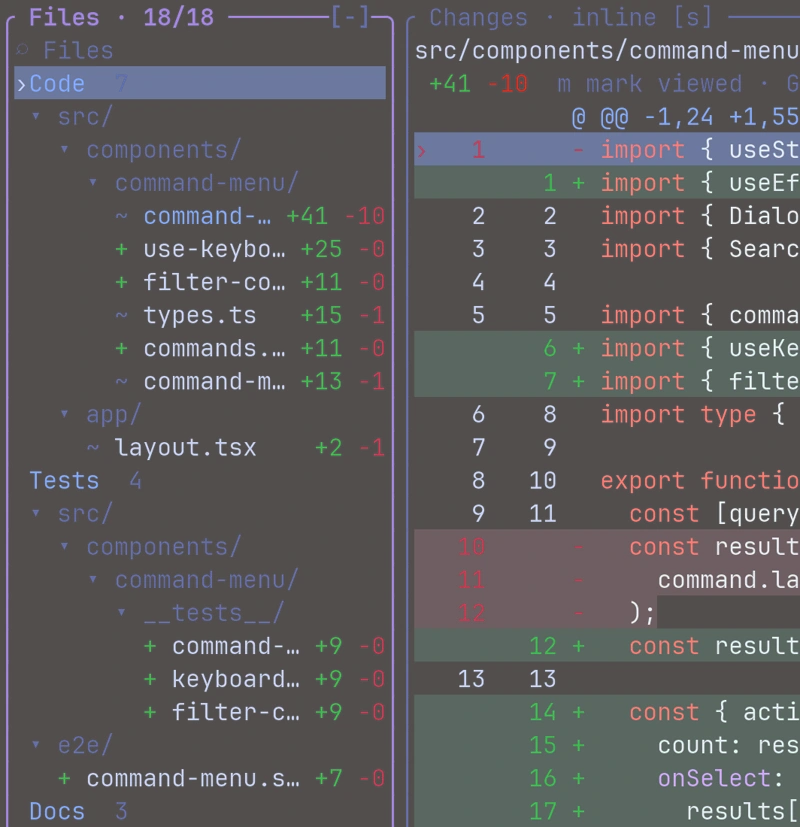
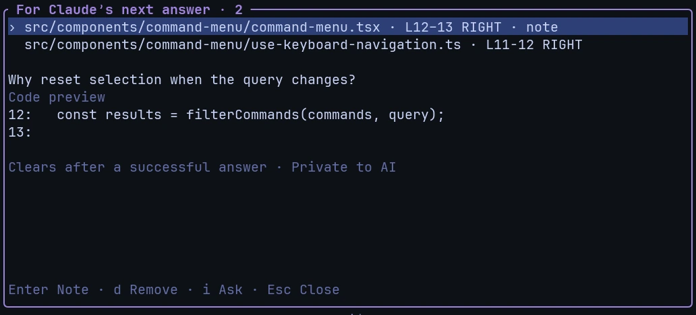
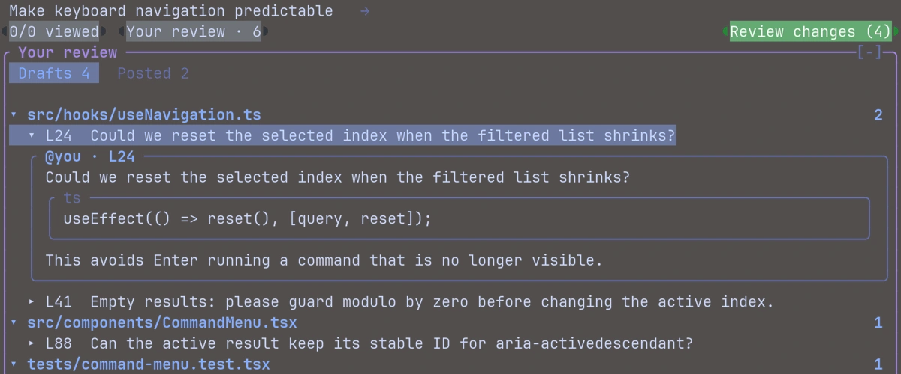

Know what you’re reviewing
A keyboard-first GitHub PR reviewer, with Claude Code beside your code.

Open the demoActual Rust terminal frames. JetBrainsMono Nerd Font, local Alacritty colors. Explore the web preview.
Make the PR your size
Start with the code that matters. Keep the file tree, filter out docs or tests, and move through the changes in your own order.
Try the code filter

A senior beside the diff
You don’t need to know the whole codebase to ask a good question. Select a few lines, leave a private note, then do the same in another file.
Claude receives the code and your notes with the next question. The conversation stays linked to the PR when you come back.
Ask about a selectionWatch a review unfold
From a large diff to a specific question, without leaving the keyboard.
Actual terminal footage · synthetic PR and scripted replies · 88 seconds · no narration
GitHub keeps the review
Draft comments on the changed lines. Unfold them once more before you publish. Comment, approve or request changes through GitHub’s native review API.
Private AI notes are a separate queue. They never become GitHub comments.

A few practical things
Does this replace GitHub reviews?
GitHub remains the source of truth. LazyReview reads the PR and writes native pending comments, replies and review outcomes through GitHub’s APIs.
Which AI account do I use?
Your existing Claude Code login. The default Paper companion and embedded terminal use persistent native sessions. Codex and Grok are also supported in terminal mode.
Where do my private notes go?
To the companion as context for your next prompt, with their code and revision. They do not appear as typed messages. Delivered notes clear after a successful answer; failed or interrupted turns keep them.
Does this browser demo use AI?
No. It is an interactive sample with local state and scripted replies. It does not log in to GitHub, send code to a model or change a real review.
What do I need to run it?
Rust 1.88 or newer to build, Node.js 22.18 or newer at runtime, and GitHub CLI authentication. Install and sign in to your chosen AI CLI to use the companion. You can try it offline with ./lazyreview --demo.
How mature is it?
It is an early, MIT-licensed project. Local workflows and API contracts have automated coverage; live GitHub writes still need disposable-PR testing. Contributions and bug reports are welcome.
Bring it to your terminal
Build from source, sign in to GitHub, and choose a PR.
git clone https://github.com/FxmousKid/lazyreview.git
cd lazyreview
cargo build --release --locked --manifest-path tui/Cargo.toml
gh auth login
./lazyreview